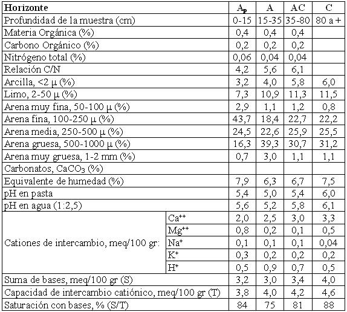

Ustipsamment típico, arenosa, mixta, térmica
Capacidad de uso: VIsc
La Serie Río Segundo, es un suelo excesivamente drenado, desarrollado sobre materiales de origen fluvial, de textura arenosa, vinculado a antiguos cauces (paleocauces) y áreas planas entre los mismos, donde ocupa las partes más elevadas dentro de este relieve. La parte superficial del suelo, de unos 35 cm de profundidad (horizonte A) es de textura arenosa, con casi 90% de la fracción mineral dominada por arena, sin estructura, suelto y muy baja cantidad de materia orgánica. Luego de un horizonte transicional se alcanza el material originario (horizonte C) que aparece a los 80 cm de profundidad, de textura arenosa franca y estructura en grano simple. La baja retención de humedad en todo el perfil, su falta de estructura, la escasa fertilidad y bajo contenido de materia orgánica de estos suelos, son factores limitantes para los cultivos normales de la zona, siendo utilizados en pasturas.
Descripción del perfil típico:
El perfil que representa el modal de la Serie fue descrito a 5,6 Km al NNO de la localidad de Costa Sacate, departamento Río Segundo, provincia de Córdoba.
Ap 0-15 cm; color en húmedo pardo oscuro (10YR3/3); arenoso; estructura de grano simple; suelto en seco; no plástico; no adhesivo; límite inferior abrupto, suave.
A 15-35 cm; color en húmedo pardo oscuro (10YR3/3); areno franco a arenoso; estructura en bloques subangulares medios débiles a masivo; friable en húmedo; no plástico; no adhesivo; límite inferior gradual.
AC 35-80 cm; color en húmedo pardo amarillento oscuro (10YR3/4); areno franco; estructura de grano simple; friable en húmedo; no plástico; no adhesivo; límite inferior difuso.
C 80 cm a +; color en húmedo pardo a pardo oscuro (7,5YR4/3); areno franco; estructura de grano simple; muy friable en húmedo; no plástico; no adhesivo.
Cuadro Nº30
Datos Analíticos Serie RÍO SEGUNDO
Situación: Latitud: 31º36’56”S Longitud: 63º48’03”O Altitud: 315 m.s.n.m.
 |